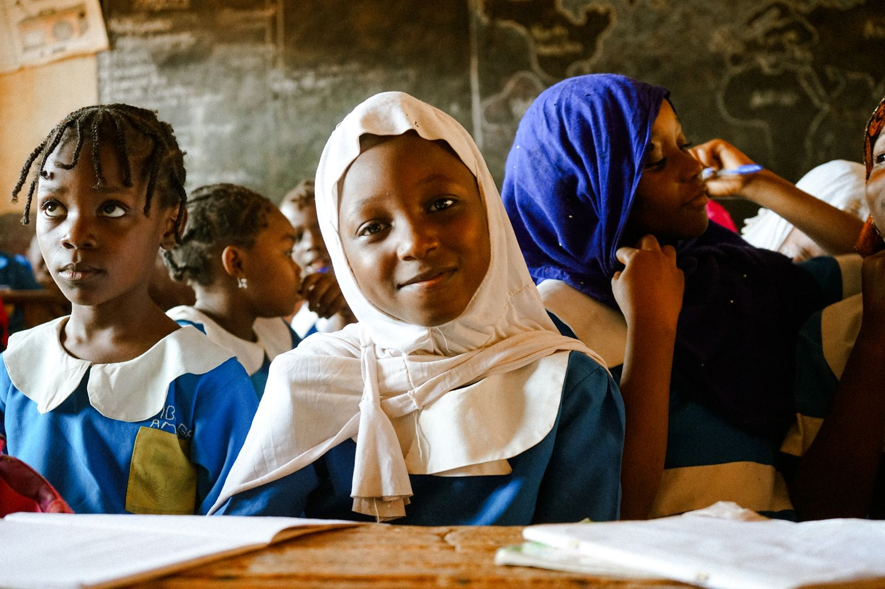
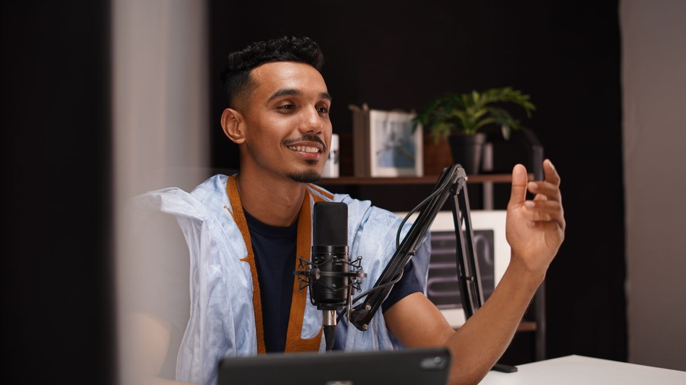
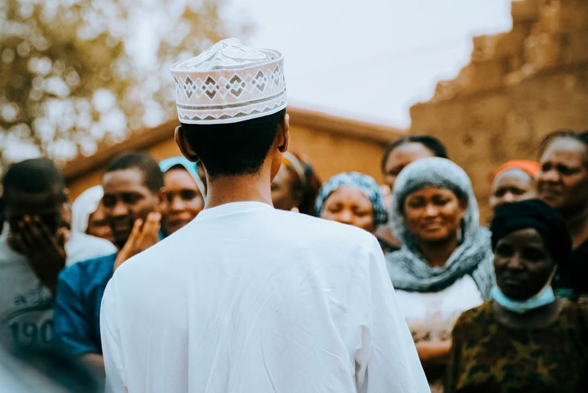

Trade Fair
01
Trade Fair
A one-day career exploration fair for all secondary school students in Ibadan. Meet professionals, explore diverse careers, and discover your path forward.
Learn moreConfused about what's next? Don't know where to start? We've built resources that help you discover careers that match your interests, understand what it takes to succeed, and connect with people doing the work you're curious about.

We are dedicated to bridging the skills gap in Nigeria by equipping young people with practical career guidance and global exposure. Our mission is to empower the next generation through economic independence and social impact, ensuring every young Nigerian has the tools to thrive.
Read our storyA one-day career exploration fair for all secondary school students in Ibadan. Meet professionals, explore diverse careers, and discover your path forward.
Learn more
Weekly insights and career guidance from our experts, bridging the skills gap through global exposure.
Listen now
Empowering Nigerian youth through social-impact storytelling and community-driven initiatives.
Explore moreExplore tech, business, media, entrepreneurship, healthcare, and social impact. For each path, we explain what the job actually is, the skills you need, realistic salary ranges in Nigeria, and how to get started today.
Remote jobs, international scholarships, visa-sponsored roles. Learn how to position yourself to compete globally—all while building your career in Nigeria.
Connect with professionals who've been where you are. Get answers to real questions, learn from their mistakes, and get accountability from people who care about your success.
Real students, real mentors, real impact. Get a glimpse of Wissen-Haus in action and the young people bridging their own skills gap.
We publish comprehensive policy papers and research reports focused on the future of work, youth economic independence, and global exposure for Nigerian students.
View papersThe search for real results is over at last.
Mentor a student, partner your institution, or fuel the mission with a gift. Every hour and every naira moves a young person closer to economic independence.